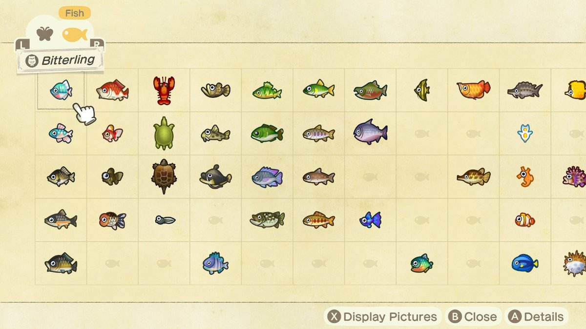

Why?
This site is made to help players of the game "Animal Crossing New Horizons" Complete their "Critterpedia"
This is what the critterpedia looks like to the player. It's a log of all the different fish they have caught in the game. One of the main objectives of the game is to complete this catalog. An issue by it's design is that it doesn't help the user find the remaining fish
Some of the fish require players to go uncomfortably out of their way to find catch them. Each fish has a specific location, time of day, and months it can be caught in, and most of the 80 fish have a unique combination of the three. Some need to be caught only super late at night, and others can only be caught in a location you didn't know had unique fish. It sometimes feels like it's all luck, when it really isn't The game never explains any of this to you, many people we talked to didn't even know some fish were exclusively found near the end of a waterfall, but we are here to fix that.
Info
We would love if you check out the repo we used to make this and give it a star if you'd like ⭐
Updates of how this site has changed over time can be found on our repo's update page